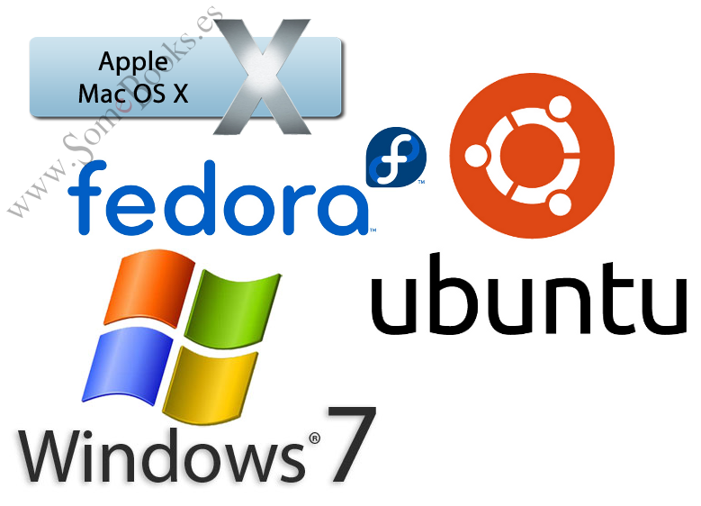

El administrador de sitios web (o webmaster) es responsable de gestionar y mantener el correcto funcionamiento de un sitio web. Aquí te describo algunas de sus funciones principales:
1. Mantenimiento Técnico
Monitoreo del servidor: Asegurar que el servidor del sitio web esté funcionando de manera óptima, identificando y resolviendo problemas como caídas del sitio o tiempos de carga lentos.
Actualizaciones de software: Mantener actualizados el CMS, plugins, temas, y cualquier otro software utilizado en el sitio.
Backup y recuperación: Realizar copias de seguridad regulares del sitio web y tener un plan de recuperación ante desastres.
2. Seguridad
Implementación de medidas de seguridad: Proteger el sitio contra ataques cibernéticos mediante el uso de firewalls y certificados SSL.
Monitoreo de vulnerabilidades: Identificar vulnerabilidades en el sitio y aplicar parches de seguridad.
3. Gestión de Contenidos
Actualización de contenido: Subir y gestionar textos, imágenes y videos para mantener el contenido actualizado.
Optimización de contenidos: Asegurar que los contenidos están optimizados para SEO.
Control de calidad: Verificar errores en el contenido, como enlaces rotos o imágenes que no cargan correctamente.
4. Gestión de Usuarios
Creación de cuentas: Gestionar las cuentas de usuarios y accesos.
Control de permisos: Asignar permisos a los usuarios según sus roles.
5. Optimización del Rendimiento
Optimización de la velocidad: Asegurar que el sitio cargue rápidamente optimizando imágenes y usando cache.
Monitoreo del rendimiento: Utilizar herramientas para medir el tráfico y optimizar el sitio.
6. Resolución de Problemas
Detección de errores: Identificar y corregir errores técnicos en el sitio.
Soporte técnico: Proporcionar soporte técnico a usuarios que tienen problemas.
7. Diseño y Experiencia del Usuario (UX)
Mejorar la navegación: Asegurar que el sitio sea fácil de navegar.
Adaptabilidad móvil: Garantizar que el sitio esté optimizado para dispositivos móviles.
Accesibilidad web: Implementar estándares de accesibilidad para personas con discapacidades.
8. Análisis de Datos
Seguimiento de tráfico web: Utilizar herramientas de análisis para entender cómo los usuarios interactúan con el sitio.
Informe de estadísticas: Crear reportes sobre el rendimiento del sitio y proponer mejoras.
9. Gestión de Proyectos
Colaboración con equipos: Trabajar con diseñadores, desarrolladores y otros para implementar nuevas características.
Planificación de mejoras: Proponer nuevas funcionalidades o rediseños basados en las necesidades del negocio.
10. Cumplimiento Legal
Protección de datos: Asegurarse de que el sitio cumpla con normativas de protección de datos como el GDPR.
Cumplimiento de derechos de autor: Garantizar que todo el contenido del sitio tenga los derechos necesarios.
PERFIL DEL ADMINISTRADOR
1. Habilidades Técnicas
Conocimientos de desarrollo web: Debe tener conocimientos en lenguajes como HTML, CSS, JavaScript, y a menudo en PHP, Python o Ruby, para poder realizar ajustes técnicos cuando sea necesario.
Gestión de bases de datos: Debe ser capaz de gestionar bases de datos (como MySQL o PostgreSQL) para administrar contenido y usuarios del sitio.
Experiencia con CMS: Familiaridad con sistemas de gestión de contenidos como WordPress, Joomla, o Drupal.
Optimización SEO: Capacidad para optimizar el contenido para motores de búsqueda, mejorando el posicionamiento en los resultados de búsqueda.
2. Habilidades de Gestión
Gestión de proyectos: Capacidad para planificar, organizar y ejecutar proyectos relacionados con el sitio web, como rediseños, actualizaciones o lanzamientos de nuevas funciones.
Resolución de problemas: Capacidad para detectar y solucionar problemas técnicos rápidamente, minimizando el tiempo de inactividad del sitio.
Trabajo en equipo: Colaborar con diseñadores, desarrolladores, y otros miembros del equipo de marketing o contenido.
Planificación y organización: Mantener una agenda clara para la actualización y mantenimiento regular del sitio web.
3. Habilidades de Comunicación
Capacidad de explicar conceptos técnicos: Debe ser capaz de explicar problemas y soluciones técnicas a colegas o clientes que no tienen conocimientos técnicos.
Atención al cliente: En algunos casos, el administrador de sitios web interactúa con los usuarios para resolver problemas, responder preguntas o brindar soporte técnico.
Documentación: Debe ser capaz de documentar adecuadamente los procedimientos técnicos, cambios realizados en el sitio y soluciones a problemas comunes.
4. Atención a los Detalles
Detección de errores: Ser meticuloso en la revisión del sitio, buscando errores tipográficos, enlaces rotos, o imágenes que no cargan correctamente.
Cuidado con la seguridad: Asegurarse de que todas las medidas de seguridad estén en su lugar, actualizando regularmente el software y monitoreando posibles vulnerabilidades.
5. Flexibilidad y Adaptación
Capacidad para aprender nuevas tecnologías: La tecnología web está en constante cambio, por lo que un buen administrador debe estar al tanto de las últimas tendencias y herramientas.
Adaptabilidad: Debe estar dispuesto a adaptarse a nuevos retos, ya sea en la gestión de un nuevo CMS, la implementación de nuevas funcionalidades o la resolución de problemas inesperados.
6. Mentalidad de Mejora Continua
Optimización del rendimiento: Siempre buscando maneras de mejorar el rendimiento del sitio web, incluyendo la velocidad de carga y la experiencia del usuario.
Monitoreo y análisis: Analizar el tráfico y comportamiento de los usuarios para ajustar el contenido o la estructura del sitio según sea necesario.
SOFTWARE PARA ADMINISTRAR EL SERVIDOR

El uso de software especializado para la administración de servidores permite a los administradores gestionar de manera eficiente los recursos, la seguridad y las configuraciones del servidor. A continuación, se presentan algunas de las herramientas más utilizadas para la administración de servidores.
1. cPanel
cPanel es uno de los paneles de control de hosting más populares. Ofrece una interfaz gráfica que permite a los administradores gestionar fácilmente servidores web, bases de datos, archivos y correos electrónicos.
Interfaz intuitiva: Facilita la administración del servidor incluso para usuarios con poca experiencia técnica.
Gestión de dominios y correos electrónicos: Permite configurar cuentas de correo, subdominios, redirecciones y más.
Seguridad: Incluye opciones para la gestión de certificados SSL y cortafuegos (firewalls).
2. Plesk
Plesk es otro panel de control muy utilizado para la gestión de servidores, compatible tanto con servidores Linux como Windows. Es popular por su flexibilidad y soporte para múltiples entornos de desarrollo.
Compatible con múltiples plataformas: Funciona en servidores Windows y Linux.
Soporte para varias tecnologías: Compatible con WordPress, Joomla, Docker y Git, lo que facilita la integración de distintas aplicaciones.
Seguridad avanzada: Ofrece herramientas de seguridad como el monitoreo de vulnerabilidades y la protección antivirus.
3. Webmin
Webmin es una herramienta gratuita y de código abierto para la administración de servidores. Permite gestionar varios aspectos del servidor a través de una interfaz web, como la configuración de usuarios, permisos y servidores web.
Interfaz web: Administra el servidor directamente desde un navegador.
Configuración avanzada: Permite gestionar usuarios, servicios, bases de datos, y más.
Modularidad: Se puede ampliar mediante módulos adicionales según las necesidades del administrador.
4. phpMyAdmin
phpMyAdmin es una aplicación web diseñada para administrar bases de datos MySQL y MariaDB. Su interfaz facilita la gestión de bases de datos sin necesidad de utilizar la línea de comandos.
Gestión de bases de datos: Permite crear, modificar y eliminar bases de datos, tablas, registros, y más.
Exportación e importación: Facilita el respaldo y restauración de bases de datos.
Interfaz amigable: Ofrece una interfaz gráfica sencilla para gestionar bases de datos de manera eficiente.
5. Nagios
Nagios es una herramienta de monitoreo de servidores muy conocida. Permite a los administradores monitorizar el rendimiento de sus servidores, servicios y aplicaciones, alertando en tiempo real sobre cualquier fallo o problema.
Monitoreo en tiempo real: Vigila el estado del servidor y sus servicios, como el uso de CPU, memoria, disco, entre otros.
Alertas y notificaciones: Envía notificaciones por correo o SMS cuando ocurre un problema.
Compatible con múltiples plataformas: Soporta la supervisión de servidores Linux y Windows.
6. Ansible
Ansible es una herramienta de automatización de TI que permite a los administradores gestionar configuraciones de servidores de manera masiva. Es popular por su simplicidad y su capacidad de automatizar tareas repetitivas.
Automatización de tareas: Automatiza tareas como la configuración de servidores, despliegue de aplicaciones, y actualizaciones de software.
Sin necesidad de agentes: No requiere instalar software adicional en los servidores gestionados.
Fácil de usar: Utiliza archivos YAML sencillos para describir las tareas a realizar.
7. WHM (Web Host Manager)
WHM es un complemento de cPanel que ofrece herramientas adicionales para la administración avanzada de servidores, especialmente para aquellos que gestionan múltiples sitios web en un mismo servidor.
Gestión de múltiples cuentas: Ideal para gestionar múltiples cuentas de hosting en un solo servidor.
Configuraciones avanzadas: Permite realizar configuraciones de seguridad, asignar recursos y gestionar servidores DNS.
Compatibilidad con cPanel: Se integra fácilmente con cPanel para ofrecer una experiencia de administración completa.